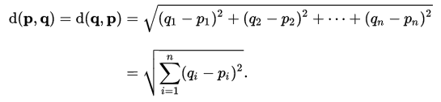
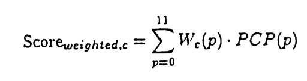
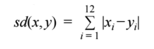

harmony-analyser documentation
Back to main page
Table of contents
- Introduction
- JHarmonyAnalyser library documentation
- Installation
- Chord Analyser reference
- Chroma Analyser reference
- harmony-analyser tools documentation
- Installation
- Chord Transition Tool
- Audio Analysis Tool
- Visualization Tool
- Contact information
1. Introduction
harmony-analyser is a set of visual tools for music harmony analysis of WAV/MIDI input, powered by JHarmonyAnalyser library.
The application was developed 2013-2016 as a joint Master's thesis & PhD thesis project (Comenius University in Bratislava, Charles University in Prague,
with the help of LaBRI Université Bordeaux 1) by Ladislav Maršík [contact author].
Documentation has two parts:
- JHarmonyAnalyser library documentation explains the used models of music theory, chord and chroma distances.
- harmony-analyser tools documentation explains the user interface of available tools on harmony-analyser.org
2. JHarmonyAnalyser library documentation
For version: 1.2
2.1. Installation
Download and unpack the source tarball from the library releases page. Optionally, download the
library in the form of JAR file, importing it to your project.
2.2 Chord Analyser reference
Chord Analyser is a joint name for the models available under chord_analyser Java package. Explanation of the models follow:
- Tonal Pitch Space (TPS) is a model proposed by Fred Lerdahl in 2001.
Chords are visualized in five levels (octave, fifths, triadic, diatonic, and chromatic). Distances between chords are then calculated as a sum of number of shifts
and number of non-common pitch classes on certain levels. We use TPS as one of our chord distances, as it can measure distance between arbitrary chords within one octave.
- Chord Complexity Distance (CCD) is a model proposed in our previous work.
This model treats the added dissonant tones on the top of major or minor chord as additional layers of complexity. Rules are defined o add/remove/modify the
dissonant tones. Resulting distance equals the complexity of constructing the next chord from the previous chord.
2.3. Chroma Analyser reference
Chroma Analyser is a joint name for the models available under chroma_analyser Java package. Explanation of the models follow:
- Euclidean distance
The Euclidean distance between points p and q is the length of the line segment connecting them

[Source: Wikipedia] Link to the source
- Weighted sums
Weighted sums method is the commonly used for pattern matching. In Chroma Analyser we experimentally use it to evaluate distance between two chromas.
Since weighted sum will output higher values for close match, we invert the resulting value to obtain distance measure. The original weighted sums definition is:

Where Wc stands for a chord template (major, minor, diminished, ...), and PCP stands for pitch class profile of the segment being compared.
In our analysis we treat Wc as first chroma and PCP as second chroma.
[Source: Fujishima, T. Realtime Chord Recognition of Musical Sound] Link to the source
- Simple difference
We define simple difference of chroma vectors x and y as:

which is simply summing absolute values of the differences across all bins.
- Tonal difference
We define tonal difference of chroma vectors x and y as:
where w(δ) is a weight vector, which has its 12 values dependent on the context δ of the transition from x to y.
δ is a tuple (key, chord1, chord2), where all of key, chord1, chord2 are represented as boolean vectors of size 12
(chordi = true <=> the pitch class i belongs to the chord).
If the transition from x to y is within C major key, and x and y both represent C major chord,
then δ has the form (C major, C major, C major). Weight vector w(δ) is assigned as:
wi(δ)=0 <=> chord1i = true OR chord2i = true
wi(δ)=1 <=> keyi = true AND !(chord1i = true OR chord2i = true)
wi(δ)=2 in all other cases
3. harmony-analyser tools documentation
For version: 1.2
3.1 Installation
Download the executable JAR file from releases page.
Please note that JRE 8 or higher needs to be installed on your machine,
and the selection of Vamp plugins needs to be installed locally:
- libsndfile 1.0.27 or higher (Linux: Usually supported by package manager)
- Vamp Plugins SDK 2.6 or higher (Linux: Supported by package manager, or ./configure && make sdk && make install)
- jVamp 1.3 or higher (Linux: compile and place libvamp-jni.so to your java.library.path folder; run java -XshowSettings:properties if you are unsure of the location)
- Chordino and NNLS Chroma Vamp plugins 1.1 or higher (Linux: compile and place nnls-chroma.so to usr/local/lib/vamp folder)
Make sure that a MIDI input device is connected to your machine. Chord Transition Tool works with MIDI devices connected
to the MIDI IN port on your soundcard, or USB port. If you don't have a MIDI input device, you can still use
a virtual MIDI keyboard such as vkeybd for Linux
(make sure that the raw MIDI ports are available when using virtual keyboards) or just use the text input in Chord transition tool.
By hitting capture you can record two chords. Alternative way is to insert the chord in the text feel in absolute format
(e.g. C3 E3 G3) or relative format (e.g. C E G). The tool will calculate the chord complexity of both chords and
the transition complexity in between them.
Choose the folder to analyse (you should have your WAV files prepared in this folder).
To see the available plugins and their settings, click button "List plugins". Proceed by clicking
any of the available analysis buttons.
Choose the full path for the WAV file to analyse. Choose the desired visualizations in the drop-down menus.
After hitting the analyse button, the visulizations will render. If the analysis outputs have already been created,
the analysis will not be overriden. Instead, the files will be read from hard-drive, and the visualization
displayed based on the information found.

Reach us at: